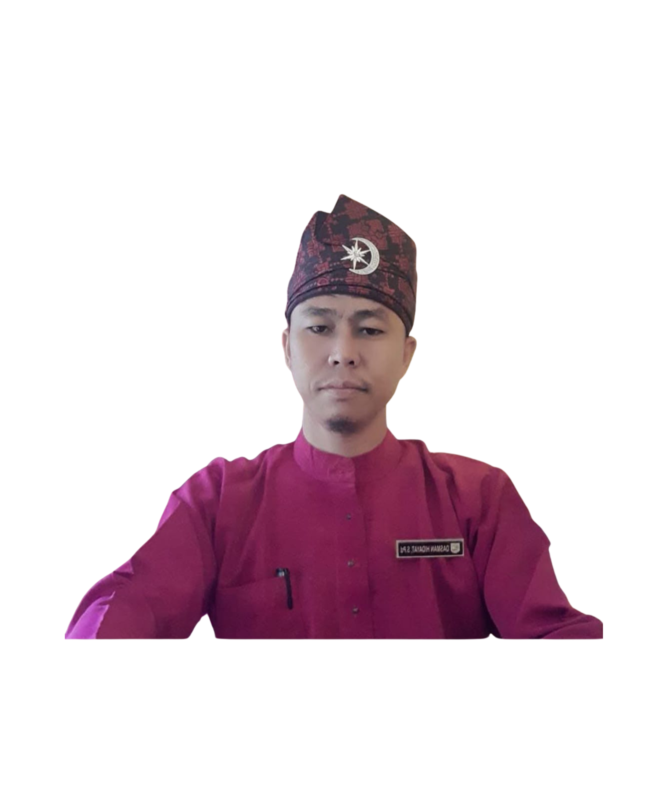
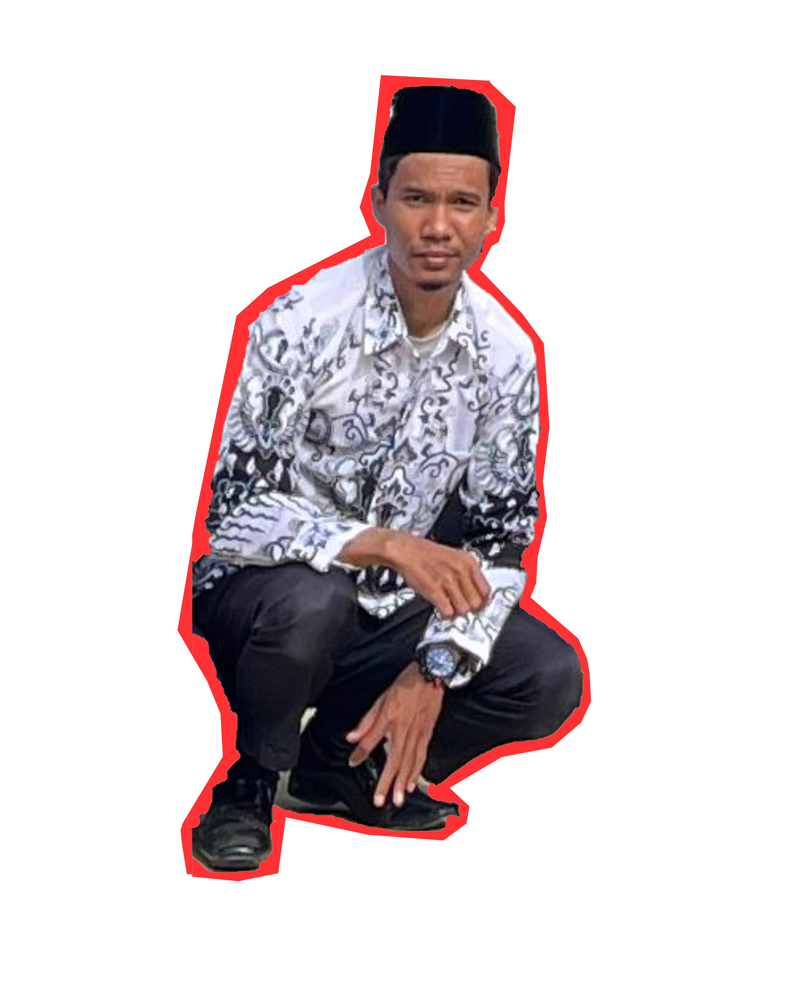
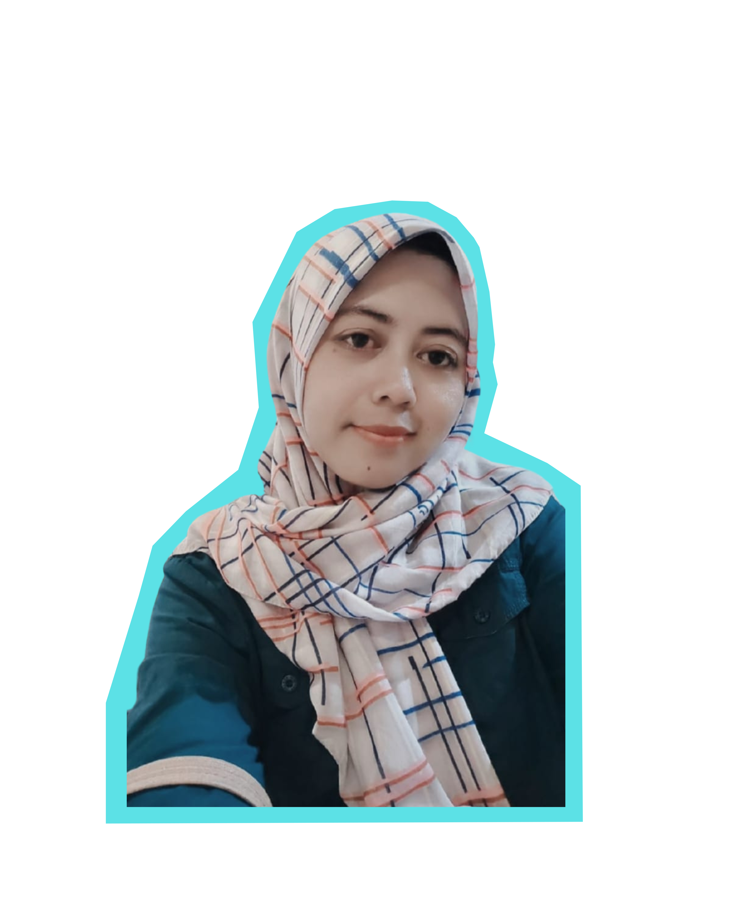
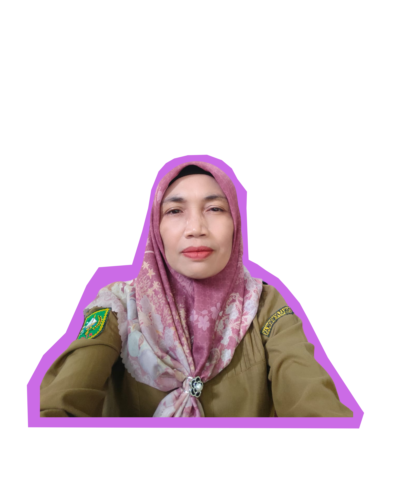

INFORMASI SPMB SMAN 1 PANGKALAN LESUNG 2025
Panitia SPMB SMAN 1 Pangkalan Lesung 2025

Dasman Hidayat, S. Pd.
Pengawas
Rifa Suryasi, S. Pd.
Penanggung Jawab
Erya Ningsih, S. Pd.
Ketua
Makde Gaol, M. Pd.
Layanan Informasi
Edril Wahyudi, S. Si.
Pendataan/Verifikator
Riwayat Kunduriyanto, S.E.
Pendataan/Verifikator

Suheri, S. Pd.
Pendataan/Verifikator
Linda, S.E.
Sekretariat

Dwi Purwitasari, S. Pd.
Sekretaris
Khairul Anam, S. Pd.
Verifikator Faktual
Daharcon Pasaribu, S. Pd.K.
Verifikator Faktual

Merius, S. IP.
Bendahara
Rizki Handayani, S. Pd.
Layanan Pengaduan
SPMB 2025
Alur Pelaksanaan SPMB 1
Alur Pelaksanaan SPMB 2
Timeline Pelaksanaan SPMB 1
Timeline Pelaksanaan SPMB 2
Persyaratan
Jalur dan Kuota
Contact Person
×
×
×
×
×
×
×
×